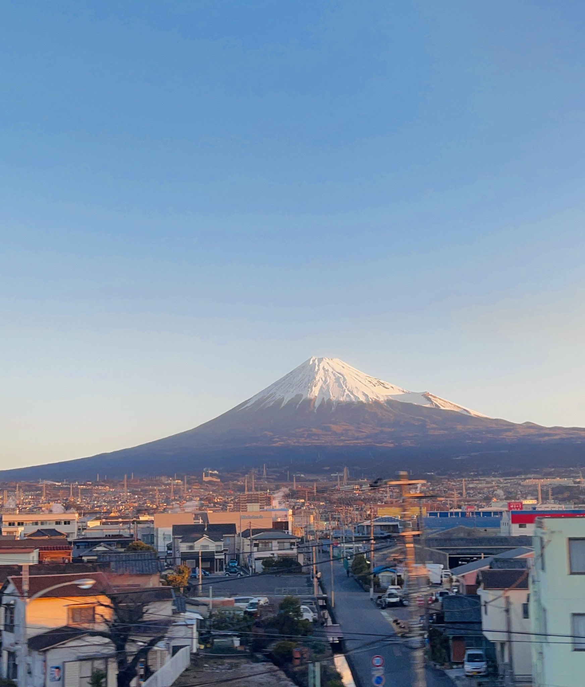

- Zona
- Mishima → Shin-Fuji
- Lado del asiento
- Asiento E · derecha hacia Shin-Osaka; izquierda hacia Tokyo
- Momento
- Unos 45 minutos después de salir de Tokio en un Nozomi
- Duración de la vista
- Vistas intermitentes durante varios minutosTiempo aproximado en Nozomi: indica cuándo estar pendiente de la ventanilla; la vista no es continua.
LA HISTORIA
¿Cómo cambia el monte Fuji durante estos tres o cuatro minutos?
Esta página se centra en el tramo clásico entre Mishima y Shin-Fuji, donde el monte Fuji se ve más grande desde el Tokaido Shinkansen. Después de Mishima, la montaña se alza tras poblaciones, fábricas y campos, desaparece al pasar por túneles cortos y vuelve a aparecer con otro ángulo y otro primer plano. El invierno nevado, el verano sin nieve y el atardecer transforman esos mismos tres o cuatro minutos en paisajes distintos.
Si viajas de Tokio a Shin-Osaka, empieza a mirar por la ventanilla derecha (asiento E) al acercarte al tramo Mishima → Shin-Fuji. Hacia Tokio, el orden se invierte y el mismo asiento E queda a tu izquierda.
Esta página se centra en las fotografías y el paisaje entre Mishima y Shin-Fuji. Para reservar asiento, consultar los tiempos desde Tokio, Kioto u Osaka y conocer los consejos para días nublados o el Fuji por la izquierda, consulta la Guía del monte Fuji.
QUÉ VER
Descubrir el paisaje entre Mishima y Shin-Fuji a través de fotografías
Cerca de Mishima, el monte Fuji aparece primero detrás de edificios y tendidos eléctricos. El encanto está en verlo ganar presencia entre paisajes cotidianos, en lugar de encontrar desde el principio una montaña aislada.
Al acercarse a Shin-Fuji, el primer plano se abre a campos y edificios más bajos, y resulta más fácil seguir la cumbre y las amplias faldas de la montaña. Varios túneles interrumpen la vista: la primera vez que desaparece no es la última oportunidad de verla.
Mientras el Fuji está a la vista, también verás una cadena de montañas más bajas delante de él. Es el monte Ashitaka, un grupo volcánico independiente situado justo al sur del Fuji. Parece formar parte de sus faldas, pero es otra montaña; en este tramo se superpone a la base del Fuji como si sostuviera su silueta. Para distinguir hasta dónde se extienden las faldas del Fuji, fíjate primero en la línea donde termina el Ashitaka.
También conviene fijarse en la dirección de la luz. El monte Fuji queda al norte de las vías y, en Japón, el sol recorre el cielo por el sur, de modo que la montaña recibe luz frontal durante prácticamente todo el día. Si no hay nubes, sus laderas se distinguen tanto por la mañana como por la tarde. Con el sol bajo, a primera hora o al final de la tarde, las sombras acentúan crestas y barrancos y definen la silueta. La primera nieve de la cumbre suele registrarse a finales de septiembre o en octubre, y hacia mediados del verano casi ha desaparecido. Por eso, desde el mismo tramo de vía, la montaña puede parecer completamente distinta según la estación.
Esta página trata del lugar, las fotografías y los cambios del paisaje. La reserva de asientos, los tiempos desde las principales estaciones, los consejos para días nublados y el Fuji por la izquierda se reúnen en la guía del monte Fuji.
EN EL MAPA
Ubicación de un vistazo
Abrir mapaAlterna entre el lugar y el punto de observación desde el Shinkansen.
TU GUÍA DEL PAISAJE
No te pierdas el paisaje
EN MOVIMIENTO
Monte Fuji en movimiento
Mira el momento en que el monte Fuji llena la ventana entre Mishima y Shin-Fuji.
Vídeo del monte Fuji desde el tren entre Mishima y Shin-Fuji
— @cram_box Ver publicación original
Monte Fuji desde la ventana del Shinkansen
— @fu_min_p Ver publicación original
Estos vídeos usan inserciones oficiales de X y YouTube.
PARA SABER MÁS
Referencias
Información oficial y registros de vistas desde el tren.